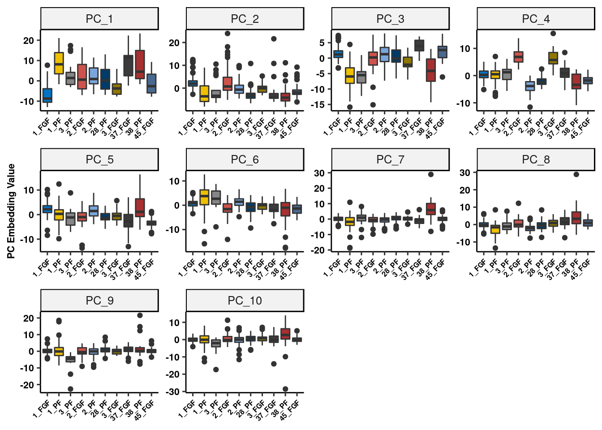
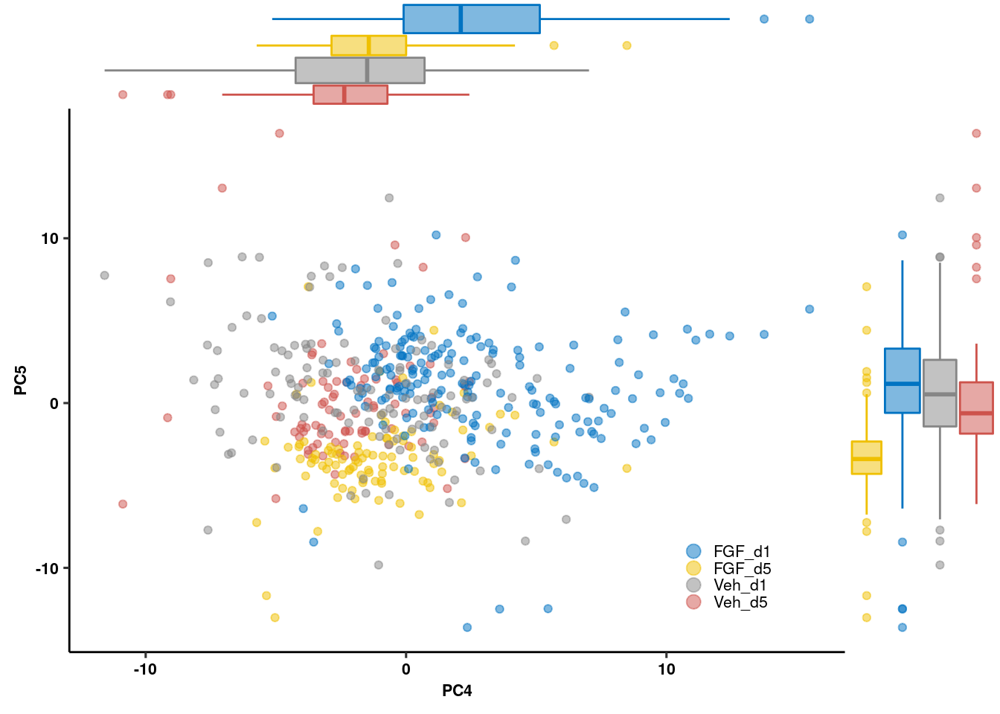
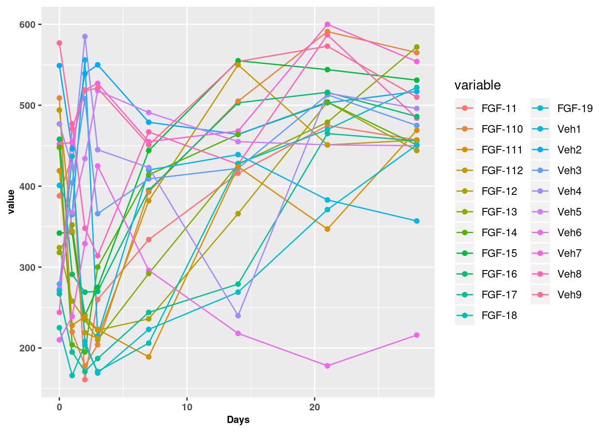
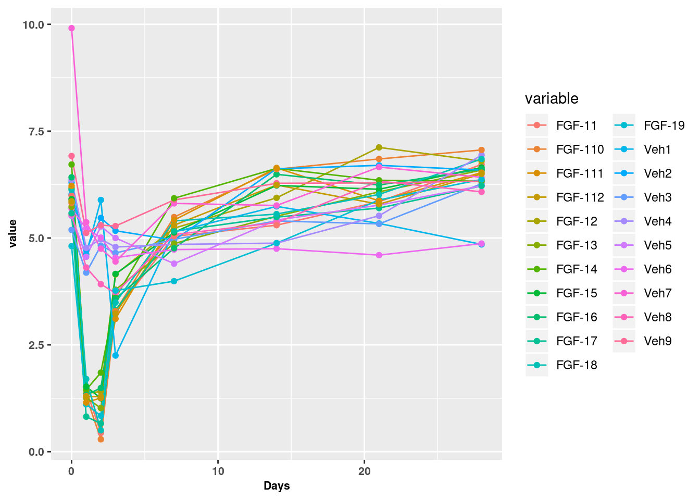
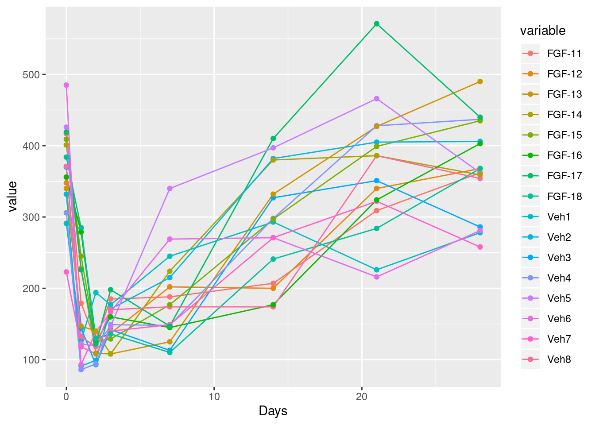
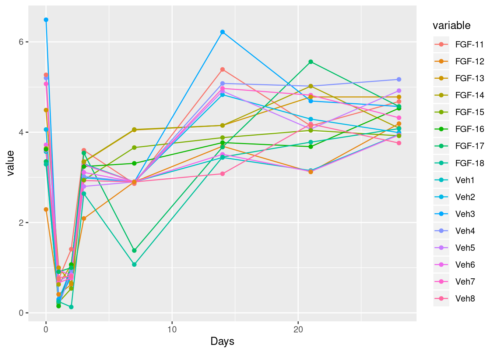
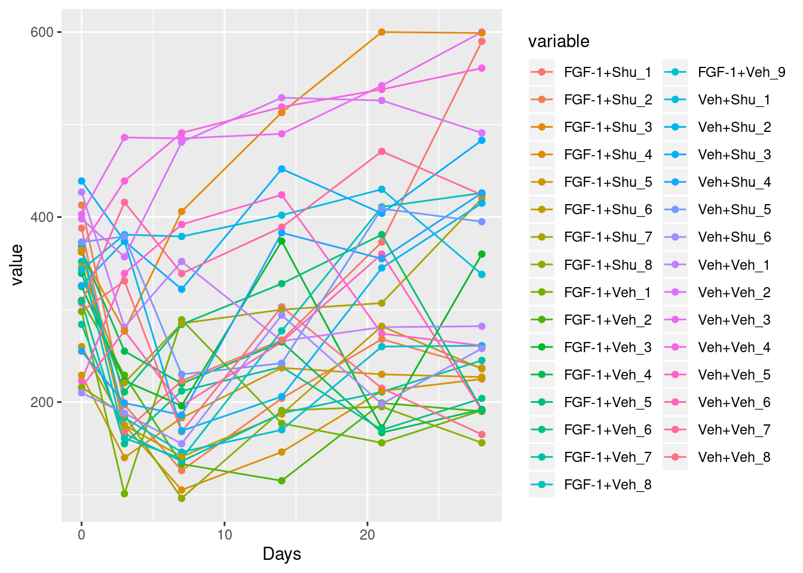
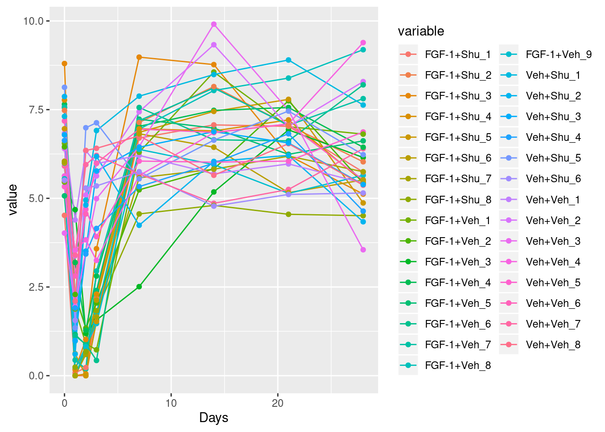
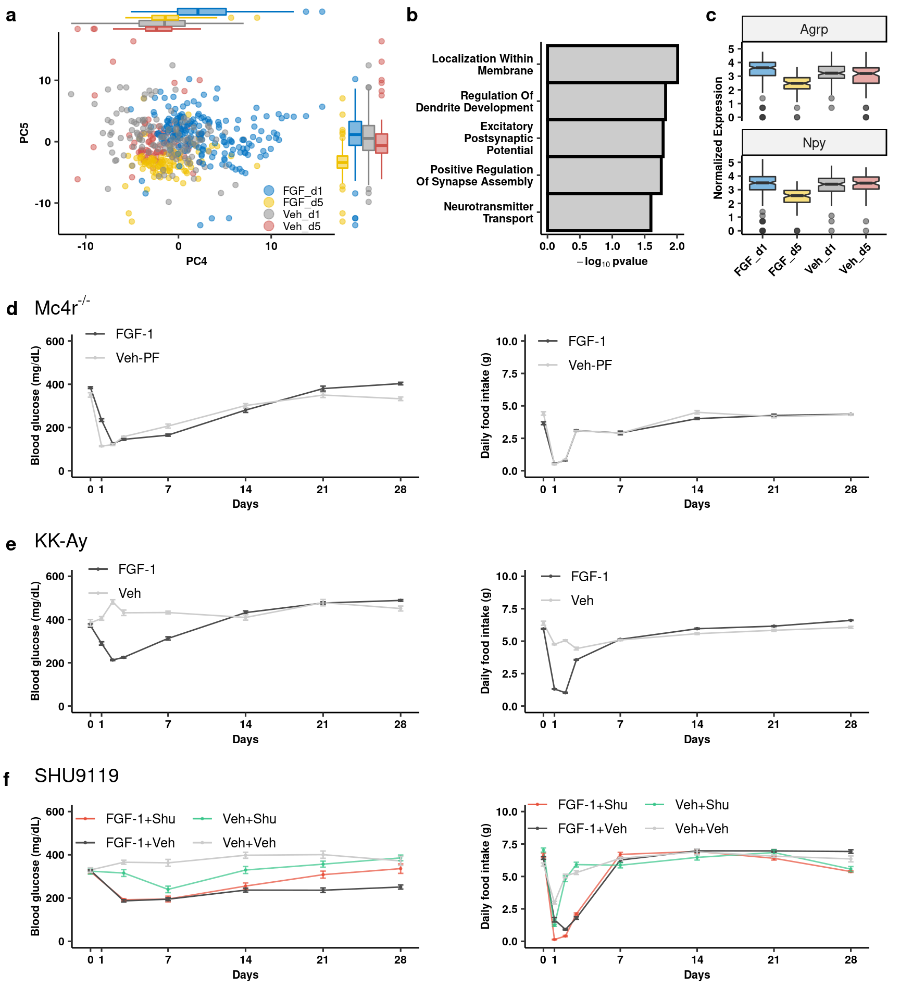

Last updated: 2019-12-02
Checks: 6 1
Knit directory: fgf_alldata/
This reproducible R Markdown analysis was created with workflowr (version 1.4.0). The Checks tab describes the reproducibility checks that were applied when the results were created. The Past versions tab lists the development history.
Great! Since the R Markdown file has been committed to the Git repository, you know the exact version of the code that produced these results.
The global environment had objects present when the code in the R Markdown file was run. These objects can affect the analysis in your R Markdown file in unknown ways. For reproduciblity it’s best to always run the code in an empty environment. Use wflow_publish or wflow_build to ensure that the code is always run in an empty environment.
The following objects were defined in the global environment when these results were created:
| Name | Class | Size |
|---|---|---|
| data | environment | 56 bytes |
| env | environment | 56 bytes |
The command set.seed(20191021) was run prior to running the code in the R Markdown file. Setting a seed ensures that any results that rely on randomness, e.g. subsampling or permutations, are reproducible.
Great job! Recording the operating system, R version, and package versions is critical for reproducibility.
Nice! There were no cached chunks for this analysis, so you can be confident that you successfully produced the results during this run.
Great job! Using relative paths to the files within your workflowr project makes it easier to run your code on other machines.
Great! You are using Git for version control. Tracking code development and connecting the code version to the results is critical for reproducibility. The version displayed above was the version of the Git repository at the time these results were generated.
Note that you need to be careful to ensure that all relevant files for the analysis have been committed to Git prior to generating the results (you can use wflow_publish or wflow_git_commit). workflowr only checks the R Markdown file, but you know if there are other scripts or data files that it depends on. Below is the status of the Git repository when the results were generated:
Ignored files:
Ignored: .Rproj.user/
Ignored: analysis/figure/
Ignored: test_files/
Untracked files:
Untracked: Rplots.pdf
Untracked: analysis/dge_resample.pdf
Untracked: analysis/figure_1.Rmd
Untracked: analysis/figure_6.Rmd
Untracked: analysis/figure_7.Rmd
Untracked: analysis/supp1.Rmd
Untracked: code/sc_functions.R
Untracked: data/bulk/
Untracked: data/fgf_filtered_nuclei.RDS
Untracked: data/figures/
Untracked: data/filtglia.RDS
Untracked: data/glia/
Untracked: data/lps1.txt
Untracked: data/mcao1.txt
Untracked: data/mcao_d3.txt
Untracked: data/mcaod7.txt
Untracked: data/mouse_data/
Untracked: data/neur_astro_induce.xlsx
Untracked: data/neuron/
Untracked: data/synaptic_activity_induced.xlsx
Untracked: neuron_clusters.csv
Untracked: olig_ttest_padj.csv
Untracked: output/agrp_pcgenes.csv
Untracked: output/all_wc_markers.csv
Untracked: output/allglia_wgcna_genemodules.csv
Untracked: output/bulk/
Untracked: output/fig.RData
Untracked: output/fig4_part2.RData
Untracked: output/glia/
Untracked: output/glial_markergenes.csv
Untracked: output/integrated_all_markergenes.csv
Untracked: output/integrated_neuronmarkers.csv
Untracked: output/neuron/
Unstaged changes:
Modified: analysis/10_wc_pseudobulk.Rmd
Modified: analysis/11_wc_astro_wgcna.Rmd
Modified: analysis/13_olig_pseudotime.Rmd
Modified: analysis/15_tany_wgcna_pseudo.Rmd
Modified: analysis/6_glial_dge.Rmd
Modified: analysis/7_ventricular_wgcna.Rmd
Modified: analysis/8_astro_wgcna.Rmd
Modified: analysis/9_wc_processing.Rmd
Note that any generated files, e.g. HTML, png, CSS, etc., are not included in this status report because it is ok for generated content to have uncommitted changes.
These are the previous versions of the R Markdown and HTML files. If you’ve configured a remote Git repository (see ?wflow_git_remote), click on the hyperlinks in the table below to view them.
| File | Version | Author | Date | Message |
|---|---|---|---|---|
| Rmd | 81c758e | Full Name | 2019-12-02 | wflow_publish(“analysis/figure_2.Rmd”) |
#Load Libraries
library(Seurat)
library(tidyverse)
library(DESeq2)
library(here)
library(future)
library(cluster)
library(parallelDist)
library(ggplot2)
library(cowplot)
library(ggrepel)
library(future.apply)
library(reshape2)
library(ggpubr)
library(ggsci)
library(ggExtra)
library(gProfileR)
#plan("multiprocess", workers = 40)
options(future.globals.maxSize = 4000 * 1024^2)#Set chunk options
fgf.agrp <- readRDS(here("data/neuron/agrp_neur.RDS"))
fgf.agrp@meta.data %>% select(sample, group, trt, day, batch)-> meta#Extrad Agrp neuron embedding values
embed <- data.frame(Embeddings(fgf.agrp, reduction = "pca")[,1:10])
embed$sample <- meta$sample
embed$sample <- fct_reorder(embed$sample, meta$group)Warning in mean.default(sort(x, partial = half + 0L:1L)[half + 0L:1L]):
argument is not numeric or logical: returning NA
Warning in mean.default(sort(x, partial = half + 0L:1L)[half + 0L:1L]):
argument is not numeric or logical: returning NA
Warning in mean.default(sort(x, partial = half + 0L:1L)[half + 0L:1L]):
argument is not numeric or logical: returning NA
Warning in mean.default(sort(x, partial = half + 0L:1L)[half + 0L:1L]):
argument is not numeric or logical: returning NA
Warning in mean.default(sort(x, partial = half + 0L:1L)[half + 0L:1L]):
argument is not numeric or logical: returning NA
Warning in mean.default(sort(x, partial = half + 0L:1L)[half + 0L:1L]):
argument is not numeric or logical: returning NA
Warning in mean.default(sort(x, partial = half + 0L:1L)[half + 0L:1L]):
argument is not numeric or logical: returning NAembed <- melt(embed, id.vars = "sample")
ggplot(embed, aes(x = sample, y=value)) +
geom_boxplot(aes(fill=sample)) +
facet_wrap(.~variable, scales="free") +
scale_fill_jco() +
theme_pubr() +
theme(legend.position = "none",
axis.text.x = element_text(size=6, angle=45, hjust=1, face="bold")) +
ylab("PC Embedding Value") + xlab(NULL) + theme_figure
ggsave(filename = here("output/neuron/agrp_pc_graph.png"), width = 10)#Plot PCs which show greatest differences between groups
data.frame(Embeddings(fgf.agrp, reduction = "pca")[,4:5]) %>%
dplyr::rename(PC4 = PC_4, PC5 = PC_5) %>% mutate(group = fgf.agrp$group) %>%
mutate(group = replace(group, group == "FGF_Day-5", "FGF_d5")) %>%
mutate(group = replace(group, group == "FGF_Day-1", "FGF_d1")) %>%
mutate(group = replace(group, group == "PF_Day-1", "Veh_d1")) %>%
mutate(group = replace(group, group == "PF_Day-5", "Veh_d5")) %>%
ggplot(aes(x=PC4, y=PC5, colour=group)) +
geom_point(alpha=0.5) +
scale_colour_jco(name="Treatment Group") +
guides(color = guide_legend(override.aes = list(size = 3))) +
theme_pubr() + theme(legend.position = c(0.85,0.15),
legend.key.size = unit(.5, "lines"),
legend.background = element_blank(),
legend.title =element_blank(),
legend.text = element_text(size=8)) + theme_figure -> pcplot
# marginal density
pcplot2 <- ggMarginal(pcplot,type="boxplot",groupColour=T, groupFill=T)
pcplot2
dev.off()null device
1 #Test enrichment of pc5 genes
pc5 <- rownames(fgf.agrp@reductions$pca[order(fgf.agrp@reductions$pca[,5]),])[1:50]
gprofiler(pc5, organism = "mmusculus", significant = T, custom_bg = rownames(fgf.agrp),
src_filter = c("GO:BP","REAC","KEGG"), hier_filtering = "strong",
min_isect_size = 3,
sort_by_structure = T,exclude_iea = T,
min_set_size = 10, max_set_size = 300,correction_method = "fdr") %>% arrange(p.value) -> ego5
ego5 %>%
select(domain, term.name, p.value, overlap.size) %>% arrange(p.value) %>% top_n(5, -p.value) %>%
mutate(x = fct_reorder(str_to_title(str_wrap(term.name,20)), -p.value)) %>%
mutate(y = -log10(p.value)) %>%
ggplot(aes(x,y)) +
geom_col(colour="black", width = 1, fill="gray80", size=1) +
theme_pubr(legend="none") +
theme(axis.text.y = element_text(size=8)) +
scale_size(range = c(5,10)) +
ggsci::scale_fill_lancet() +
coord_flip() +
xlab(NULL) + ylab(expression(bold(-log[10]~pvalue))) +
theme_figure -> pc5go#Show Agrp/Npy changes
data.frame(t(fgf.agrp[["SCT"]]@data[c("Agrp","Npy"),])) %>%
mutate(group = fgf.agrp$group) %>%
mutate(group = replace(group, group == "FGF_Day-5", "FGF_d5")) %>%
mutate(group = replace(group, group == "FGF_Day-1", "FGF_d1")) %>%
mutate(group = replace(group, group == "PF_Day-1", "Veh_d1")) %>%
mutate(group = replace(group, group == "PF_Day-5", "Veh_d5")) %>%
melt(id.vars = c("group")) %>%
ggplot(aes(x=group, y=value)) +
geom_boxplot(aes(fill=group),alpha=.5, notch=T) +
facet_wrap(.~variable, nrow = 2) + theme_pubr() +
theme(axis.text.x = element_text(angle=45, hjust=1), legend.position = "none") +
ylab("Normalized Expression") + xlab(NULL) + scale_fill_jco() + theme_figure -> agrp_npy_exp#Individual measurements of KK-Ay (supplementary)
readxl::read_xlsx(here("data/mouse_data/fig2/191116_Agouti_Mc4r_SHU.xlsx"), sheet = 1, range = "A6:V14", col_names = T) %>%
melt(id.vars = "Days") %>%
mutate(variable = c(rep(paste0("Veh", seq_len(9)), each = 8), rep(paste0("FGF-1", seq_len(12)), each = 8))) %>%
mutate(trt = ifelse(grepl("Veh", variable), yes = "V", no = "F")) -> kk_bg
ggplot(kk_bg, aes(x = Days, y = value, color = variable)) +
geom_line() + geom_point() + theme_figure
ggsave(filename = here("data/figures/fig2/fig2supp_kk_indiv_bg.tiff"), width = 8, h=4, compression="lzw")
readxl::read_xlsx(here("data/mouse_data/fig2/191116_Agouti_Mc4r_SHU.xlsx"), sheet = 1, range = "A20:V28", col_names = T) %>%
melt(id.vars = "Days") %>%
mutate(variable = c(rep(paste0("Veh", seq_len(9)), each = 8), rep(paste0("FGF-1", seq_len(12)), each = 8))) %>%
mutate(trt = ifelse(grepl("Veh", variable), yes = "V", no = "F")) -> kk_fi
ggplot(kk_fi, aes(x = Days, y = value, color = variable)) + geom_line() +
geom_point() + theme_figure
ggsave(filename = here("data/figures/fig2/fig2supp_kk_indiv_fi.tiff"), width = 8, h=4, compression="lzw")#Group measurements of KK-Ay (Fig 2E)
kk_bg %>% dplyr::group_by(Days, trt) %>% dplyr::summarise(mean = mean(value), sd = sd(value), se=sd/length(value)) %>%
mutate(trt = ifelse(grepl("F", trt), yes = "FGF-1", no = "Veh")) %>%
ggplot(aes(x=Days, y=mean, color=trt)) + geom_point(size=0.5) + geom_line() +
geom_errorbar(aes(ymin=mean-se, ymax=mean+se), width=.5) + ggpubr::theme_pubr() +
scale_color_manual(name=NULL, values = c("gray30","gray80")) +
ylab("Blood glucose (mg/dL)") + xlab("Days") + ylim(c(0,600)) +
scale_x_continuous(breaks=c(0,1,7,14,21,28)) +
theme(legend.direction = "vertical", legend.position = c(.15,.95),
legend.background = element_blank()) + theme_figure -> kk_bg_plot
kk_fi %>% dplyr::group_by(Days, trt) %>% dplyr::summarise(mean = mean(value), sd = sd(value), se=sd/length(value)) %>%
mutate(trt = ifelse(grepl("F", trt), yes = "FGF-1", no = "Veh")) %>%
ggplot(aes(x=Days, y=mean, color=trt)) + geom_point(size=0.5) + geom_line() +
geom_errorbar(aes(ymin=mean-se, ymax=mean+se), width=.5) + ggpubr::theme_pubr() +
scale_color_manual(name=NULL, values = c("gray30","gray80")) + ylim(c(0,10)) +
scale_x_continuous(breaks=c(0,1,7,14,21,28)) +
ylab("Daily food intake (g)") + xlab("Days") +
theme(legend.direction = "vertical", legend.position = c(.15,.9),
legend.background = element_blank()) + theme_figure -> kk_fi_plot#Individual measurements of Mc4r -/- (supplementary)
readxl::read_xlsx(here("data/mouse_data/fig2/191116_Agouti_Mc4r_SHU.xlsx"), sheet = 2, range="A6:Q14", col_names = T) %>%
melt(id.vars="Days") %>% mutate(variable = c(rep(paste0("Veh", seq_len(8)), each=8), rep(paste0("FGF-1", seq_len(8)), each=8))) %>%
mutate(trt = ifelse(grepl("Veh", variable), yes = "V", no = "F"))-> mc4_bg
ggplot(mc4_bg, aes(x=Days, y=value, color=variable)) + geom_line() + geom_point() 
ggsave(filename = here("data/figures/fig2/fig2supp_mc4_indiv_bg.tiff"), width = 8, h=4, compression="lzw")
readxl::read_xlsx(here("data/mouse_data/fig2/191116_Agouti_Mc4r_SHU.xlsx"), sheet = 2, range="A21:Q29", col_names = T) %>%
melt(id.vars="Days") %>% mutate(variable = c(rep(paste0("Veh", seq_len(8)), each=8), rep(paste0("FGF-1", seq_len(8)), each=8))) %>%
mutate(trt = ifelse(grepl("Veh", variable), yes = "V", no = "F"))-> mc4_fi
ggplot(mc4_fi, aes(x=Days, y=value, color=variable)) + geom_line() + geom_point()
ggsave(filename = here("data/figures/fig2/fig2supp_mc4_indiv_fi.tiff"), width = 8, h=4, compression="lzw")#Group measurements of Mc4r -/- (Fig 2E)
mc4_bg %>% dplyr::group_by(Days, trt) %>% dplyr::summarise(mean = mean(value), sd = sd(value), se=sd/length(value)) %>%
mutate(trt = ifelse(grepl("F", trt), yes = "FGF-1", no = "Veh-PF")) %>%
ggplot(aes(x=Days, y=mean, color=trt)) + geom_point(size=0.5) + geom_line() +
geom_errorbar(aes(ymin=mean-se, ymax=mean+se), width=.5) + ggpubr::theme_pubr() +
scale_color_manual(name=NULL, values = c("gray30","gray80")) +
ylab("Blood glucose (mg/dL)") + xlab("Days") + ylim(c(0,600)) +
scale_x_continuous(breaks=c(0,1,7,14,21,28)) +
theme(legend.direction = "vertical", legend.position = c(.15,.95), legend.background = element_blank()) + theme_figure -> mc4_bg_plot
mc4_fi %>% dplyr::group_by(Days, trt) %>% dplyr::summarise(mean = mean(value), sd = sd(value), se=sd/length(value)) %>%
mutate(trt = ifelse(grepl("F", trt), yes = "FGF-1", no = "Veh-PF")) %>%
ggplot(aes(x=Days, y=mean, color=trt)) + geom_point(size=0.5) + geom_line() +
geom_errorbar(aes(ymin=mean-se, ymax=mean+se), width=.5) + ggpubr::theme_pubr() +
scale_color_manual(name=NULL, values = c("gray30","gray80")) +
ylab("Daily food intake (g)") + xlab("Days") + ylim(c(0,10)) +
scale_x_continuous(breaks=c(0,1,7,14,21,28)) +
theme(legend.direction = "vertical", legend.position = c(.15,.9), legend.background = element_blank()) + theme_figure -> mc4_fi_plot#Individual measurements of Shu (supplementary)
readxl::read_xlsx(here("data/mouse_data/fig2/191116_Agouti_Mc4r_SHU.xlsx"), sheet = 3, range="A6:AF12", col_names = T) %>%
melt(id.vars="Days") %>%
mutate(variable = c(rep(paste0("Veh+Veh_", seq_len(8)), each=6), rep(paste0("FGF-1+Veh_", seq_len(9)), each=6),
rep(paste0("FGF-1+Shu_", seq_len(8)), each=6), rep(paste0("Veh+Shu_", seq_len(6)), each=6))) %>%
separate(variable, sep="_", into="group",remove = F)-> shu_bgWarning: Expected 1 pieces. Additional pieces discarded in 186 rows [1, 2,
3, 4, 5, 6, 7, 8, 9, 10, 11, 12, 13, 14, 15, 16, 17, 18, 19, 20, ...].ggplot(shu_bg, aes(x=Days, y=value, color=variable)) + geom_line() + geom_point() 
ggsave(filename = here("data/figures/fig2/fig2supp_shu_indiv_bg.tiff"), width = 8, h=4, compression="lzw")
readxl::read_xlsx(here("data/mouse_data/fig2/191116_Agouti_Mc4r_SHU.xlsx"), sheet = 3, range="A19:AF27", col_names = T) %>%
melt(id.vars="Days") %>%
mutate(variable = c(rep(paste0("Veh+Veh_", seq_len(8)), each=8), rep(paste0("FGF-1+Veh_", seq_len(9)), each=8),
rep(paste0("FGF-1+Shu_", seq_len(8)), each=8), rep(paste0("Veh+Shu_", seq_len(6)), each=8))) %>%
separate(variable, sep="_", into="group",remove = F)-> shu_fiWarning: Expected 1 pieces. Additional pieces discarded in 248 rows [1, 2,
3, 4, 5, 6, 7, 8, 9, 10, 11, 12, 13, 14, 15, 16, 17, 18, 19, 20, ...].ggplot(shu_fi, aes(x=Days, y=value, color=variable)) + geom_line() + geom_point() 
ggsave(filename = here("data/figures/fig2/fig2supp_shu_indiv_fi.tiff"), width = 8, h=4, compression="lzw")#Group measurements of Mc4r -/- (Fig 2E)
shu_bg %>% dplyr::group_by(Days, group) %>% dplyr::summarise(mean = mean(value), sd = sd(value), se=sd/length(value)) %>%
ggplot(aes(x=Days, y=mean, color=group)) + geom_point(size=0.5) + geom_line() +
geom_errorbar(aes(ymin=mean-se, ymax=mean+se), width=.5) + ggpubr::theme_pubr() +
scale_color_manual(name=NULL, values = c("#E64B35B2","gray30", "#35C488B2","gray80")) +
ylab("Blood glucose (mg/dL)") + xlab("Days") + ylim(c(0,600)) +
scale_x_continuous(breaks=c(0,1,7,14,21,28)) +
guides(color=guide_legend(ncol=2)) +
theme(legend.position = c(.3,.85), legend.background = element_blank()) + theme_figure -> shu_bg_plot
shu_fi %>% dplyr::group_by(Days, group) %>% dplyr::summarise(mean = mean(value), sd = sd(value), se=sd/length(value)) %>%
ggplot(aes(x=Days, y=mean, color=group)) + geom_point(size=0.5) + geom_line() +
geom_errorbar(aes(ymin=mean-se, ymax=mean+se), width=.5) + ggpubr::theme_pubr() +
scale_color_manual(name=NULL, values = c("#E64B35B2","gray30", "#35C488B2","gray80")) +
ylab("Daily food intake (g)") + xlab("Days") + ylim(c(0,10)) +
scale_x_continuous(breaks=c(0,1,7,14,21,28)) +
guides(color=guide_legend(ncol=2)) +
theme(legend.position = c(.3,.95), legend.background = element_blank()) + theme_figure -> shu_fi_plottop <- plot_grid(pcplot2, pc5go, agrp_npy_exp, nrow=1, labels=c("auto"), scale=0.95,
rel_widths = c(2,1.5,1), align="hv", axis = "tb")
mc4title <- ggdraw() + draw_label(expression(Mc4r^{"-/-"}),fontface = 'bold', x = 0, hjust = 0) + theme(plot.margin = margin(0, 0, 0, 25))
mc4 <- plot_grid(mc4_bg_plot, mc4_fi_plot, scale=0.9)
mc4plot <- plot_grid(mc4title,mc4, ncol=1, rel_heights = c(0.1,1), labels = c("d"))
kktitle <- ggdraw() + draw_label("KK-Ay", x = 0, hjust = 0) + theme(plot.margin = margin(0, 0, 0, 25))
kk_ay <- plot_grid(kk_bg_plot, kk_fi_plot, scale=0.9)
kkplot <- plot_grid(kktitle,kk_ay, ncol=1, rel_heights = c(0.1,1), labels = c("e"))
shutitle <- ggdraw() + draw_label("SHU9119", x = 0, hjust = 0) + theme(plot.margin = margin(0, 0, 0, 25))
shucomp <- plot_grid(shu_bg_plot, shu_fi_plot, scale=0.9)
shuplot <- plot_grid(shutitle,shucomp, ncol=1, rel_heights = c(0.1,1), labels = c("f"))
plot_grid(top, mc4plot, kkplot, shuplot, ncol=1, rel_heights = c(1.25,1,1,1))
ggsave(filename = here("data/figures/fig2/fig2.tiff"), width = 9, h=10, compression="lzw")
sessionInfo()R version 3.5.3 (2019-03-11)
Platform: x86_64-pc-linux-gnu (64-bit)
Running under: Storage
Matrix products: default
BLAS/LAPACK: /usr/lib64/libopenblas-r0.3.3.so
locale:
[1] LC_CTYPE=en_DK.UTF-8 LC_NUMERIC=C
[3] LC_TIME=en_DK.UTF-8 LC_COLLATE=en_DK.UTF-8
[5] LC_MONETARY=en_DK.UTF-8 LC_MESSAGES=en_DK.UTF-8
[7] LC_PAPER=en_DK.UTF-8 LC_NAME=C
[9] LC_ADDRESS=C LC_TELEPHONE=C
[11] LC_MEASUREMENT=en_DK.UTF-8 LC_IDENTIFICATION=C
attached base packages:
[1] parallel stats4 stats graphics grDevices utils datasets
[8] methods base
other attached packages:
[1] gProfileR_0.6.7 ggExtra_0.9
[3] ggsci_2.9 ggpubr_0.2.1
[5] magrittr_1.5 reshape2_1.4.3
[7] future.apply_1.3.0 ggrepel_0.8.0.9000
[9] cowplot_1.0.0 parallelDist_0.2.4
[11] cluster_2.1.0 future_1.14.0
[13] here_0.1 DESeq2_1.22.2
[15] SummarizedExperiment_1.12.0 DelayedArray_0.8.0
[17] BiocParallel_1.16.6 matrixStats_0.54.0
[19] Biobase_2.42.0 GenomicRanges_1.34.0
[21] GenomeInfoDb_1.18.2 IRanges_2.16.0
[23] S4Vectors_0.20.1 BiocGenerics_0.28.0
[25] forcats_0.4.0 stringr_1.4.0
[27] dplyr_0.8.3 purrr_0.3.2
[29] readr_1.3.1.9000 tidyr_0.8.3
[31] tibble_2.1.3 ggplot2_3.2.1
[33] tidyverse_1.2.1 Seurat_3.0.3.9036
loaded via a namespace (and not attached):
[1] reticulate_1.13 R.utils_2.9.0 tidyselect_0.2.5
[4] RSQLite_2.1.1 AnnotationDbi_1.44.0 htmlwidgets_1.3
[7] grid_3.5.3 Rtsne_0.15 munsell_0.5.0
[10] codetools_0.2-16 ica_1.0-2 miniUI_0.1.1.1
[13] withr_2.1.2 colorspace_1.4-1 highr_0.8
[16] knitr_1.23 rstudioapi_0.10 ROCR_1.0-7
[19] ggsignif_0.5.0 gbRd_0.4-11 listenv_0.7.0
[22] labeling_0.3 Rdpack_0.11-0 git2r_0.25.2
[25] GenomeInfoDbData_1.2.0 bit64_0.9-7 rprojroot_1.3-2
[28] vctrs_0.2.0 generics_0.0.2 xfun_0.8
[31] R6_2.4.0 rsvd_1.0.2 locfit_1.5-9.1
[34] bitops_1.0-6 assertthat_0.2.1 promises_1.0.1
[37] SDMTools_1.1-221.1 scales_1.0.0 nnet_7.3-12
[40] gtable_0.3.0 npsurv_0.4-0 globals_0.12.4
[43] workflowr_1.4.0 rlang_0.4.0 zeallot_0.1.0
[46] genefilter_1.64.0 splines_3.5.3 lazyeval_0.2.2
[49] acepack_1.4.1 broom_0.5.2 checkmate_1.9.4
[52] yaml_2.2.0 modelr_0.1.4 backports_1.1.4
[55] httpuv_1.5.1 Hmisc_4.2-0 tools_3.5.3
[58] ellipsis_0.2.0.1 gplots_3.0.1.1 RColorBrewer_1.1-2
[61] ggridges_0.5.1 Rcpp_1.0.2 plyr_1.8.4
[64] base64enc_0.1-3 zlibbioc_1.28.0 RCurl_1.95-4.12
[67] rpart_4.1-15 pbapply_1.4-1 zoo_1.8-6
[70] haven_2.1.0 fs_1.3.1 data.table_1.12.2
[73] lmtest_0.9-37 RANN_2.6.1 whisker_0.3-2
[76] fitdistrplus_1.0-14 mime_0.7 hms_0.5.0
[79] lsei_1.2-0 evaluate_0.14 xtable_1.8-4
[82] XML_3.98-1.20 readxl_1.3.1 gridExtra_2.3
[85] compiler_3.5.3 KernSmooth_2.23-15 crayon_1.3.4
[88] R.oo_1.22.0 htmltools_0.3.6 later_0.8.0
[91] Formula_1.2-3 geneplotter_1.60.0 RcppParallel_4.4.3
[94] lubridate_1.7.4 DBI_1.0.0 MASS_7.3-51.4
[97] Matrix_1.2-17 cli_1.1.0 R.methodsS3_1.7.1
[100] gdata_2.18.0 metap_1.1 igraph_1.2.4.1
[103] pkgconfig_2.0.2 foreign_0.8-71 plotly_4.9.0
[106] xml2_1.2.0 annotate_1.60.1 XVector_0.22.0
[109] rematch_1.0.1 bibtex_0.4.2 rvest_0.3.4
[112] digest_0.6.20 sctransform_0.2.0 RcppAnnoy_0.0.12
[115] tsne_0.1-3 rmarkdown_1.13 cellranger_1.1.0
[118] leiden_0.3.1 htmlTable_1.13.1 uwot_0.1.3
[121] shiny_1.3.2 gtools_3.8.1 nlme_3.1-140
[124] jsonlite_1.6 viridisLite_0.3.0 pillar_1.4.2
[127] lattice_0.20-38 httr_1.4.1 survival_2.44-1.1
[130] glue_1.3.1 png_0.1-7 bit_1.1-14
[133] stringi_1.4.3 blob_1.1.1 latticeExtra_0.6-28
[136] caTools_1.17.1.2 memoise_1.1.0 irlba_2.3.3
[139] ape_5.3